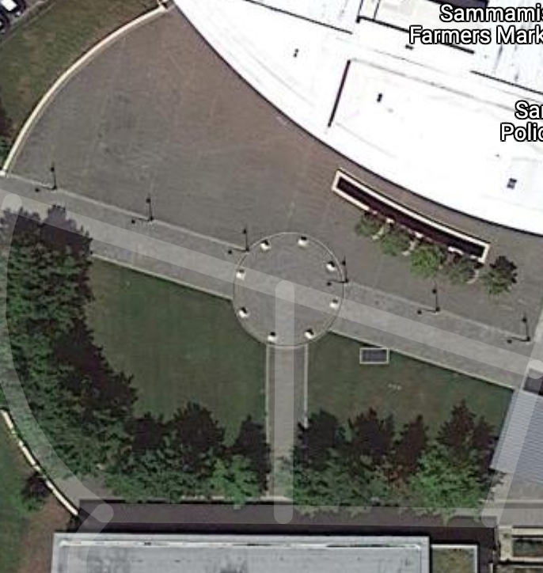

Welcome to the Sammamish Virtual Tour!
You are currently standing at this location...

To your left is the Sammamish Public Library
It houses many books, along with events such as art exibits and tutoring services.

To your right is the Sammamish City Hall and Police Station

Lastly, in the front we have the YMCA & the local park trail.
This area is a top choice for individuals dog-walking as well as for various exercises.
Thank you for visiting!